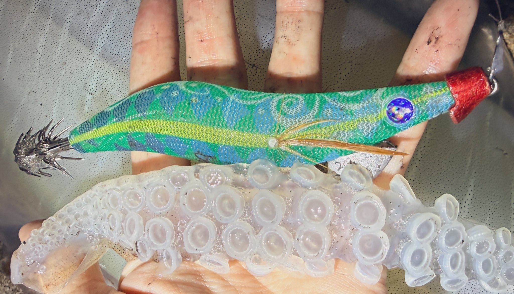

ラマレル
（エギ）
ラマレルはBlueBlue（ブルーブルー）のエギです。
シーバスや青物のルアーで人気のブルーブルーから、初めて登場するエギ。片山愛海さんが監修し、キレのあるダートと安定したフォールを追求しています。2026年秋発売予定で、現時点で確認できているのは3.5号です。

画像出典:片山愛海さんのX
スペック
- メーカー
- BlueBlue（ブルーブルー）
- タイプ
- エギ
- サイズ
- 3.5号（ほかのサイズは未発表）
- アクション
- ダートアクション
- 監修
- 片山愛海さん
- ターゲット
- アオリイカ
- 発売
- 2026年秋発売予定
▼今すぐチェック
ラマレルの特徴
ブルーブルー初、片山愛海さん監修のダート系エギ
-
ブルーブルー初のエギ
シーバス・青物・ライトゲームのルアーで人気のブルーブルーが、初めてエギに参入。ルアーづくりで培ったノウハウがエギにどう生かされるか注目だ。
-
片山愛海さん監修
エギングでも活躍する片山愛海さんが監修。実釣の視点から、アクションやカラーが作り込まれている。
-
キレのあるダートと安定したフォール
シャクリでキレよく左右にダートし、フォールでは姿勢が安定して抱かせやすいことを追求。エギングの基本性能を重視したモデルだ。
ラマレルの使い方
基本はキャストして着底させ、シャクリでダートさせてからフォールで抱かせる、エギングの基本的な使い方になる。
詳しい使い方やおすすめのアクションは、発売後に情報が出そろったら追記します。
ラマレルの得意な状況
3.5号は、春の大型アオリイカ狙いや、ある程度水深のあるポイントで使いやすいサイズ。
ダートとフォールの基本性能を重視したモデルなので、シーズンを通して出番がありそうです。
ワンポイント
2026年秋発売予定のため、価格・沈下速度・カラーラインナップなどの詳細はまだ発表されていません。
最新情報は、ブルーブルーや片山愛海さんのSNSをチェックしてください。
オススメカラー
ラマレルのカラーラインナップは発表待ちです。公開されているカラーを紹介します。
片山愛海さんのXで公開されたカラー。新しい模様を取り入れたデザインになっている。正式なカラー名は発表待ち。
画像出典:片山愛海さんのX
ラマレルに似ているルアー
-
 ゲキダキ カミナリ
ジャッカル
詳細はこちら＞
ゲキダキ カミナリ
ジャッカル
詳細はこちら＞
飛距離・ダート・フォールの安定性を追求した新作エギ。ダートとフォールを重視する考え方が共通する。
-
クリンチ カエル跳びアッパー
シマノ
詳細はこちら＞
左右＋上への立体ダートと安定フォールで抱かせる新作エギ。
-
 エギ政 改
DUO
詳細はこちら＞
エギ政 改
DUO
詳細はこちら＞
リニューアルした人気エギ。3.5号もそろい、シャローから深場まで対応できる。